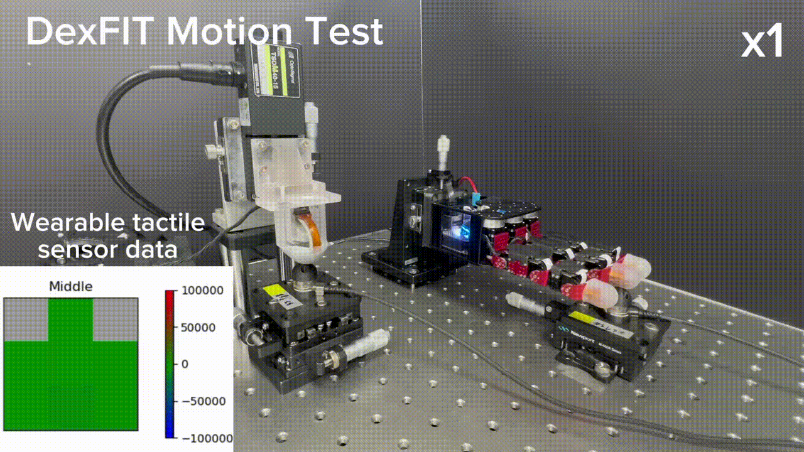

DexFIT: Force Informed Transfer
for Dexterous Manipulation
using Kinematically Isomorphic Tactile Glove
Under Double-Blind Review · Submitted to IROS 2026
Under Double-Blind Review · Submitted to IROS 2026
Acquiring high-quality demonstration data for dexterous robotic hand manipulation remains challenging because conventional methods either lose critical force information during collection or require complex, error-prone retargeting processes. In this paper, we propose DexFIT (Dexterous Force-Informed Transfer), a system designed to transfer human contact forces to a robotic hand in real-time through a kinematically isomorphic wearable glove equipped with integrated fingertip tactile sensors. The glove's 16-degree-of-freedom (DoF) joint structure is mechanically identical to the target robot hand, thereby eliminating the need for retargeting entirely.
During data collection, a Force Generation (FG) module converts tactile readings from the operator's fingertips into supplementary joint angle commands, enabling the robot hand to generate contact forces proportional to the human's applied pressure. For autonomous deployment, an Adaptive Force Control (AFC) module monitors task progress via the robot's onboard tactile sensors and dynamically adjusts grasp forces. We train a vision-free Diffusion Policy on collected proprioceptive data (joint positions, kinesthetic sensors, and tactile signals) and evaluate the system on an in-hand light bulb rotation task. DexFIT achieves a 100% task completion rate in its optimal configuration, with a 34.5% reduction in task completion time and 16% reduction in energy consumption compared to position-only isomorphic control.
A kinematically isomorphic wearable glove with integrated fingertip tactile sensors transfers both joint angles and contact forces from the operator to the robot hand in real-time.

DexFIT concept: isomorphic joint transfer + tactile-driven contact force generation.
Joint structure mechanically identical to the target robot hand. Direct 1:1 transfer, no retargeting.

16-DoF wearable glove with potentiometer encoders and fingertip tactile modules
| DoF | 16 (4 fingers × 4) |
| Joint encoder | Rotary potentiometer |
| ADC resolution | 12-bit (~0.08°/cnt) |
| Angle accuracy | R²=0.998, RMSE=2.59° |
| Tactile modules | 3 fingers × 7 barometric taxels |
| Cover material | Ecoflex-50, 3 mm |
| Update rate | 90 Hz (SPI) |
| Joint range | −5° to +95° (hard stop) |
| Link material | PLA + Onyx nylon composite |
| Weight | ~180 g |
Barometric tactile modules on 3 fingertips (thumb, index, middle). 7 taxels each on flexible PCB, covered with 3 mm Ecoflex-50 and a thin PLA plate to reduce the soft-cover dead zone.
Real-time 7-taxel pressure map during fingertip contact (per finger)
Aggregated pressure map across thumb, index, and middle fingertips

| Sensing IC | Barometric pressure sensor |
| Principle | Piezoresistive barometric |
| Taxels per finger | 7 (7 mm spacing) |
| Total taxels | 21 (3 fingers) |
| Cover | Ecoflex-50, 3 mm + PLA plate |
| Force range | 0 – 6 N |
| Repeatability RMSE | 0.064 N |
| Response time | <50 ms (47 ms measured) |
| PCB type | Flexible PCB |
16-DoF robot hand with 60 barometric tactile taxels, 12 kinesthetic force/torque sensors, and magnetic encoders. EtherCAT communication at up to 1 kHz.

16-DoF multi-sensory robotic hand with 60 tactile taxels and 12 kinesthetic sensors
| DoF | 16 (4 fingers × 4) |
| Tactile sensors | 60 taxels (15/finger), 250 Hz |
| Tactile range | 1.5 N capacity, 1.5 mN sensitivity |
| Kinesthetic F/T | 12 × 3-axis (3/finger) |
| F_z range | ±200 N, T_x/T_y ±1 N·m, 300 Hz |
| Position sensor | Magnetic encoder × 16 |
| Communication | EtherCAT @ 1 kHz |

Left: data acquisition pipeline with Force Generator producing supplementary angle commands from tactile readings. Right: vision-free Diffusion Policy with Adaptive Force Controller at deployment.
When the operator contacts an object, the maximum taxel reading across 7 sensors drives additional joint flexion on the robot hand. The robot squeezes harder than the glove angle dictates — generating measurable contact forces proportional to the operator's applied pressure.
θj,cmd = θj,glove + Kj · (Tf / Tscale)
K = 30 (DIP/PIP), K = 15 (MCP)
3-finger avg. RMSE = 0.63 N, Pearson r > 0.93
At inference, the robot's onboard tactile sensors detect contact and the bulb rotation velocity is monitored. When rotation stalls, a velocity-based controller increases DIP joint flexion on contacting fingers, compensating for the increasing friction beyond 300° of bulb rotation.
eω = clip(10 − ω, −10, 10)
gAFC = max(0, eω / 10 · Gmax)
Gmax = 500 encoder counts
Per-joint gain K swept over {5, 10, 20, 30, 40, 50} with dual 6-axis F/T sensors. K = 30 minimizes RMSE between human and robot contact force.

Force reproduction experiment with dual 6-axis F/T sensors; RMSE minimized at K = 30.
In-hand rotation task: reach 300° cumulative rotation within 60 s against progressively increasing socket friction (bulb fully locks at ≈ 450°). Vision-free; robot arm locked in a fixed pose. 5 trials per condition, 10 demonstrations each.

Setup: RGB camera tracks bulb angle; 6-axis F/T sensor under the socket logs applied forces.

AFC kicks in as friction increases past 300°, maintaining rotation through the high-friction phase.
Comparing teleoperation conditions during data collection. Force Generation (FG) lifts the speed-matching score from 40.69% to 48.53% and reduces the average success time by 21.6%.
Teleoperation (free space)

10/21 successes · 33.35 s avg. · No physical contact. Trajectories do not encode bulb position/shape.
FG Teleoperation (Ours)

10/13 successes · 26.24 s avg. · 15.07 deg/s · Tactile-driven force transfer matches human intent.
A vision-free Diffusion Policy trained on position-only demonstrations fails to produce sufficient grasp force. Force-informed demonstrations (DexFIT) yield a policy that inherently applies appropriate forces.
Contact Teleop (FG off, AFC off)
20% success (1/5) · Rubs against the bulb surface without generating sufficient friction to rotate it.
DexFIT — FG + AFC (Ours)
100% success · 26.45 s · 9.107 deg/s · Lowest energy consumption (479.9 kJ).
With FG-trained policy, AFC further shortens completion time by 16% and reduces energy consumption by 12%.
FG Teleop — AFC off
100% success · 31.48 s · 7.366 deg/s · Stalls near the high-friction phase.
DexFIT — FG + AFC (Ours)

100% success · 26.45 s · 9.107 deg/s · AFC detects stalls and supplies extra DIP flexion.
Ablation of DexFIT components on the light bulb rotation task (5 trials per condition, 10 demonstrations each).
| Method | Contact | FG | AFC | Success (%) | Time (s) | Ang. Vel. (deg/s) | Energy (kJ) |
|---|---|---|---|---|---|---|---|
| Teleop. (AFC off) | ✗ | ✗ | ✗ | 0 | — | 1.186 | — |
| Teleop. (AFC on) | ✗ | ✗ | ✓ | 0 | — | 3.881 | — |
| Contact Teleop. (AFC off) | ✓ | ✗ | ✗ | 20 | 40.39 | 4.374 | 571.2 |
| Contact Teleop. (AFC on) | ✓ | ✗ | ✓ | 100 | 41.86 | 6.603 | 576.3 |
| FG Teleop. (AFC off) | ✓ | ✓ | ✗ | 100 | 31.48 | 7.366 | 543.9 |
| DexFIT — Ours | ✓ | ✓ | ✓ | 100 | 26.45 | 9.107 | 479.9 |
Scaling (preliminary): Training DexFIT with 40 FG demonstrations (vs. 10) further reduces task time to 24.22 s, lifts angular velocity to 11.34 deg/s, and cuts energy consumption to 432.4 kJ.
DexFIT demonstrates that explicit force generation — at both the data collection stage and the deployment stage — is essential for contact-rich dexterous manipulation with multi-finger robot hands. The kinematically isomorphic glove eliminates retargeting, and the tactile-driven force generation produces demonstrations that a vision-free Diffusion Policy can directly exploit.
Future work: extend DexFIT to more contact-rich tasks (valve turning, screwdriver, pen manipulation), integrate 6-DoF arm motion for full-body manipulation, and investigate learned AFC gain tuning.

Toward more contact-rich tasks and broader object generalization.